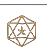

Velkynvelve
Area
11
·
Slave Pen
♪ Music on
Motion on
Voices on
Narration on
Inventory (I)
DM tools
❝ Parley
×
Log
Work detail
Talk
Look around
Steal something
End the shift
Time is stopped
−
Fit
+
Dim
Combat
DM
BOSS
Bloodied
Mage Hand
Steer
Push
Slap
Pick up
Throw
Wave
Dismiss
✕
Backpack
Click a slot to see what fits it · click an item for its card · drag gear on or off the body · I opens and closes · Esc closes
DM tools
✕
The fight
Quick resolve
End fight
They surrender
Characters on the map
Prisoners with the party
Jump to area
World
Stop time
Gray ooze: to the bridge → up from the chasm → away (preview)
Guards out of sight / back (preview)
Story: the watch changes (preview)
Story: posts unattended / posted again (preview)
Malachar calls initiative: ooze + guards (preview)
Rehearsal: start over from the beginning
Sandbox: load a newer version…
Open the pen gate (Jorlan's gambit)
Shut and lock the pen gate
Work detail: call it now
Work detail: call it off
Throw the active character over the edge (the falls in area 9, the chasm off the pen landing)
Cast
Stinking Cloud
Cloudkill
as
DC
Place it: click the floor
Start a fight here
beats
says
Turn on them (knock out, not kill)
Wake the knocked out (1d4 hours pass)
Fight music
Auto (by the odds)
Regular
Scary
Boss
Overwhelming odds
Explore music
Auto (by the place)
Outpost
Caverns
Water
Off (ambience only)
An NPC wants to talk
Make an NPC comment
Manacles: on (strike them off)
Reset ambushes
Ambushes: on
Lolth's Tooth: lift the curse
Items
Put it on the floor (then click where)
Confiscated gear
GAME
OVER
BOSS

Choose your response
Talk
Decline
Loading the outpost…
▲ Commands (DM tools open)